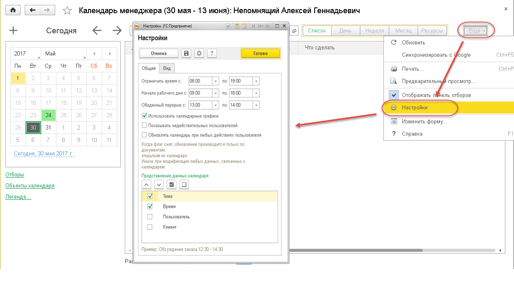

Календарь менеджера — это основное рабочее место пользователя для управления рабочим временем, задачами и организации совместных или индивидуальных встреч пользователя (мероприятий). Рабочее место возможно настраивать: добавлять / убирать отображаемые формы ( меню «Ещё» — «Настройки»).

В календаре отображаются все взаимодействия для выбранного пользователя/подразделения:
Информацию в календаре менеджера можно просматривать в одном из следующих режимов:
• «Список»;
• «День»;
• «Неделя»;
• «Месяц»;
• «Ресурсы».
В левой части формы Календаря задается период отображения информации в календаре.
По нажатию гиперссылки «Отборы» отображаются поля для задания фильтров по пользователю, подразделению, помещению, клиенту, проекту. В рабочем месте подключен механизм "Доступа к данным других пользователей". Таким образом менеджер может просматривать данные только по себе, а Руководитель - по себе и сотрудникам своего подразделения.Подсказка! По умолчанию на рабочем столе отбор задан по пользователю. В области отборов должен быть хотя бы один фильтр. Невозможно очистить все поля отборов одновременно.
Если установлен флажок «Не отображать завершенные», то в списке отображаются только незавершенные взаимодействия.
По гиперссылке «Легенда» можно увидеть расшифровку цвета окрашивания дней недели в календаре — это загрузка в баллах дня по менеджеру. Плановая загрузка данных в Календаре настраивается в карточке подразделения к которому принадлежит пользователь.Если пользователь создает документ «Мероприятие» и устанавливает в нем флажок «На весь день» (запланировано на выполнение в любое время заданного рабочего дня), то такое взаимодействие с клиентом будет отображаться в области запланированных на весь день взаимодействий. Также в этой области отображаются Взаимодействия Интересов у которых не указано время, а только его дата. Эта область расположена над табличной частью Календаря и открывается / сворачивается по нажатию на гиперссылку «Событий на весь день: <Количество событий>».
Область событий на весь день присутствует в календаре в режимах «День», «Неделя».
Настройки Календаря
По команде «Настройки» (меню кнопки «Еще» в командной панели календаря) открывается форма общих настроек календаря.
На закладке «Общие» задается временной период отображения информации в календаре, использование календарных графиков, параметры отображения взаимодействий в табличной части календаря.
В реквизите «Ограничить время» рекомендуется указывать время за 1 час до начала рабочего времени и на 1 час позже времени окончания рабочего дня (в соответствующих полях «с» и «по»). Это связано с тем, что некоторые мероприятия могут проводиться до начала рабочего дня или же завершаться после истечения рабочего времени. Данная возможность предусмотрена для более точного отображения данных в календаре.
Также на закладке «Общие» указываются рабочие часы, согласно графику организации, время обеденного перерыва.
Установленный флажок «Использовать календарные графики» позволяет отображать в календаре праздничные дни.
При установке флажка «Обновлять календарь при любых действиях пользователя» обновление информации в календаре происходит при модификации любых данных, связанных с календарем. Если же данный флажок снят, то обновление производится согласно настройкам регламентного задания.
Информация, которая будет выводиться при отображении взаимодействий в табличной части Календаря, задается в области «Представление данных календаря» (тема, время, пользователь, клиент). Под данной областью демонстрируется пример отображения информации по взаимодействиям с учетом заданных параметров.
На закладке «Вид» задаются параметры отображения элементов рабочего стола. Здесь задается цветное отображение загруженности пользователя, расположение шкалы времени (вертикальное или горизонтальное). Вариант отображения «По вертикали» более удобен, если анализируется небольшое число участников (сотрудников либо помещений) например, меньше десяти. Вариант отображения «По горизонтали» более удобен в случае большого числа участников, либо когда нужно найти промежуток времени, в котором все участники свободны.
Поле «Градация шкалы времени в расписании (мин)» предназначено для задания интервала на шкале времени. Данная возможность предусмотрена для режимов календаря «День», «Неделя», «По ресурсам». По умолчанию рекомендуется использовать "30 минут".
В области «Количество дней в неделе» переключатель устанавливается в зависимости от того, сколько рабочих дней в неделе на данном предприятии (для режима календаря «Неделя» ).
Также на данной закладке устанавливается признак автообновления календаря и задается период обновления.
Режимы календаря менеджера:
1. «Список»
В режиме «Список» календарь отображает события в виде списка за указанный период. Данный режим является наиболее удобным для работы с взаимодействиями по Интересам. Все взаимодействия в списке группируются по дате. В случае, если у Интереса установлен признак "Особое внимание"
, то взаимодействие по такому Интересу отображается вверху списка в рамках календарного дня.
2.«День»
Данный режим предназначен для отображения событий пользователя за определенный день. Событие, запланированное на весь день, отображается в верхней части календаря. Красный указатель справа от шкалы времени отмечает текущее время.
Данный режим предназначен для отображения событий пользователя за неделю. В общих настройках календаря можно указать количество дней недели, которые должны быть отображены, — 5, 6 или 7 дней. Текущий день в календаре выделяется серым цветом, текущее время в этом дне — красной горизонтальной полосой.
Данный режим предназначен для наиболее общего отображения событий пользователя за выбранный месяц и более глобального планирования рабочего времени. Количество отображаемых дней каждой недели месяца задается в общих настройках календаря пользователя.
Этот режим предназначен для отображения занятости ресурсов: помещений либо сотрудников.
В левой части рабочего стола выбирается день или период, для которого отображается занятость, а также вид анализируемого ресурса (помещение, пользователи).
Период можно задать при помощи мыши, удерживая клавишу Shift, а группу дней по отдельности — мышью с нажатой клавишей Ctrl, поочередно выбирая дни.